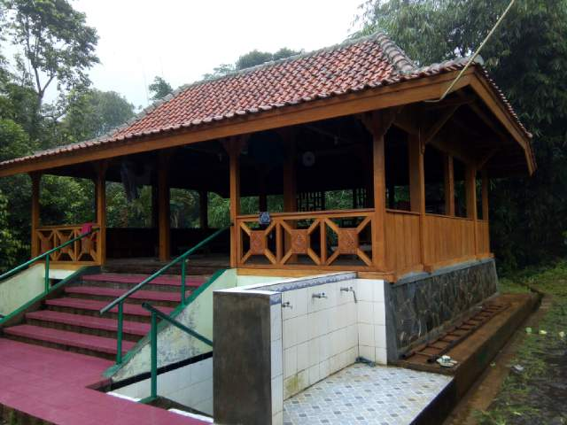
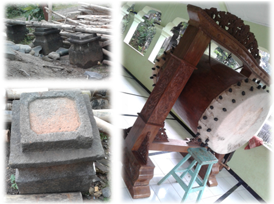

Alkisah, pada jaman dahulu ada seorang pangeran bernama Surojoyo yang kehidupannya senang mengembara. Pada suatu hari saat Sang Pangeran sedang mengembara di sebuah hutan di sebelah barat Banyuputih (sekarang dinamakan Hutan Surojoyo), dia melihat gadis yang berparas cantik dan molek. Gadis tersebut bernama Siwer atau lebih dikenal dengan Nyi Siwer. Sang Pangeran jatuh hati dengan si Gadis. Namun pada saat yang sama ada seorang yang juga jatuh hati dengan si gadis, dia adalah seorang Bupati dari Liangan (satu kampung di Subah), sehingga Nyi Siwer menjadi rebutan diantara Bupati Liangan dan Pengeran Surojoyo.
Upaya penaklukan sang gadis pun dilakukan dengan berbagai cara, hingga terjadi perkelahian diantara Pangeran dan Bupati. Dalam perkelahian tersebut Sang Pangeran kalah dan melarikan diri dalam keadaan bingung ke suatu tempat yang sekarang di namakan Hutan Kethileng. Nama Kethileng diambil dari keadaan Sang Pangeran yang thilang-thileng (melihat kesana-sini) saat pelarian tersebut. Namun sebelum sempat melarikan diri, Sang Pangeran sempat kecepit (kepepet), dan tempat tersebut sekarang dinamakan Kecepit.
Dikisahkan bahwa Pangeran Surojoyo telah mempunyai seorang anak laki-laki yang diberi nama Gento Loco. Dijuluki Gento Loco karena dalam kesehariannya selalu berbuat tidak baik, seperti berjudi, madat, madon, dan berbuat tercela lainnya. Perangai Gento Loco yang tidak jauh beda dengan ayahnya ini membuat banyak orang merasa cemas, karena sudah banyak korban akibat ulah perbuatannya.
Melihat tabiat buruk Gento Loco, ada seorang wali bernama Wali Tamansari yang selalu berusaha mengajaknya dalam kebaikan. Cara yang digunakan Wali Tamansari ini adalah mengajak kebaikan dengan cara hikmah, bukan dengan kekerasan. Beliau yakin bahwa suatu kemungkaran bila dihadapi dengan kebajikan pasti akan kalah.
Sabung Ayam
Salah satu kegemaran Gento Loco adalah sabung ayam. Maka Wali Tamansari mengajak Gento Loco untuk bersabung ayam. Sebelum sabung dimulai, diadakanlah satu perjanjian, bahwa barangsiapa yang kalah dalam sabung ayam tersebut, harus tunduk kepada yang menang.
Dengan kelebihan dan keunggulan ayam masing-masing, maka pertarungan pun dimulai. Pertarungan ayam jago itu sangat ramai, karena jago Gento Loco memiliki keistimewaan dan kekuatan yang sudah dikenal masyarakat luas. Demikian juga jago Wali Tamansari, bukanlah jago yang sembarang jago, namun jago spesial sabung.
Kisah lain mengenai jago Sang Wali, menurut beberapa sumber yang pernah diweruhi jago tersebut diantaranya Mbah Wazlan (putra Mbah Ya’qub). Pada suatu hari Jum’at, saat hendak meletakkan buku khotbah di mimbar, beliau melihat jago bertengger di sana. Beliau yakin bahwa jago itu milik Wali Tamansari, karena ayam jago itu sangat bagus, dan warga sekitar tidak ada yang memiliki jago seperti itu.
Sang Wali selalu memandikan jagonya di sebuah sumur yang berlokasi disebelah barat makam. Di sana pulalah beberapa orang pernah melihat ayam jago Sang Wali.
Dalam waktu yang cukup lama akhirnya persabungan ayam itu pun selesai. Sebagai pemenangnya adalah jago Sang Wali. Maka sesuai dengan perjanjian Gento Loco harus tunduk pada Sang Wali. Namun dasar Gento Loco, dia pun mengingkari perjanjian.
Sang Wali merasa dibohongi Gento Loco, maka terjadilah perkelahian yang berlangsung sengit. Gento Loco yang ora tedas tapak paluning pande, dan Sang Wali yang dapat menjelma menjadi mahluk lain menambah serunya pertempuran. Dengan pertolongan Allah akhirnya pertempuran dapat dimenangkan oleh Sang Wali. Gento mengalami luka berat, ususnya terburai keluar.
Namun karena kesaktian Gento, dia masih sempat melarikan diri ke arah timur dan menghilang. Tempat menghilangnya Gento Loco ini sekarang dinamakan Lokojoyo, yang berasal dari kata luka dan jaya, artinya walaupun Gento Loco sudah terluka parah namun dia masih dapat survive (bertahan hidup). Sedangkan Sang Wali dan masyarakat sekitar sudah merasa aman, terbebas dari masalah yang diakibatkan oleh ulah Gento.
Sepeninggal Gento, dikabarkan bahwa Sang Wali masih memelihara dan merawat ayam jagonya. Hal tersebut dibuktikan dengan masih ditemukannya kurungan ayam (pranji) oleh Mbah Mas’ud di satu tempat (sekarang di depan masjid). Karena itu daerah sekitar masjid sampai sekarang lebih dikenal dengan nama Kranji yang diambil dari kata Pranji (kurungan ayam).
Sepanjang hidupnya, Wali Tamansari selalu berusaha mengajak kepada siapa saja untuk berbuat kebaikan, demi terwujudnya hidup yang lebih tenteram dan damai sesuai tuntunan agama. Untuk mengenang jasa-jasa baik Sang Wali, maka daerah tersebut sekarang dinamakan Petamanan. Sekarang dukuh Petamanan masuk ke dalam wilayah desa Banyuputih Kecamatan Limpung Kabupaten Batang.
Perjuangan Mbah Kyai Mas’ud
Dikisahkan pada tahun + 1825 M terlahir seorang bocah di wilayah Mangunharjo (Wilayah Kecamatan Subah) yang diberi nama Musdai. Bocah Musdai tumbuh dan berkembang, dan pada usia 25 tahun pergi nyantri ke Mataram (Nusa Tenggara Barat) selama +10 tahun, dan namanya pun telah diganti menjadi Mas’ud. Berbekal ilmu yang dimilikinya, dia berniat pulang kampung.
Sebelum pulang kampung dia diberi wejangan oleh gurunya agar tidak langsung pulang ke tanah kelahirannya, namun disuruh mencari Situs Peninggalan Wali Tamansari yang berupa batu yang ada di tepian Kali Gambas. Di sanalah dia harus membangun sebuah masjid.
Pemuda Mas’ud pun mematuhi perintah sang guru, dan berangkatlah mencari tempat dimaksud. Dia dibekali segenggam tanah yang digunakan sebagai ciri dari tanah tujuan tempat dimana masjid akan dibangun. Tanah di tangan dan tanah tujuan harus memiliki kesamaan ciri aroma, warna dan teksturnya.
Batu Paseban
Dengan pengetahuan yang diberikan gurunya dan kemauan keras, pemuda Mas’ud berusaha dengan sekuat tenaga. Lokasi pertama yang dituju adalah Kali Gambas. Maka setelah ditemukannya kali itu, dia menelusuri tepian sungai (kali). Beberapa kali dia menemukan tanah yang cirinya mirip dengan tanah yang dia bawa. Namun dia baru menemukan tanah yang dimaksud lengkap dengan batu paseban Wali Tamansari, dan didekatnya terdapat Pranji (kurungan ayam), yakni tempat dimana Masjid Baitusalam sekarang berada. Batu Paseban Wali Tamansari sekarang ini terletak di bawah tanah dekat mihrab (pengimaman).
Setelah ditemukannya tempat itu, mulailah Pemuda Mas’ud membangun masjid. Dia sempat berfikir, apakah dia akan mampu membangun masjid seorang diri? Kemudian muncul dalam benaknya sosok kakaknya yang diharapkan dapat membantu pekerjaan itu. Dicarinya seorang kakak yang bernama Hasan Mutholib yang masih berdiam di daerah Mangunharjo.
Dengan bantuan seorang kakak saja ternyata tidaklah cukup untuk membangun masjid, dia membutuhkan tukang kayu. Seorang pemuda Truno Sayiman bergabung membantu. Konon kabarnya dia berasal dari Demak dab masih keturunan Truno Joyo.
Bangunan masjid dibuat menggunakan kayu yang diambil dari hasil babat alas (hutan) di sekitar lokasi masjid, yang sebagian besar dari jenis kayu jati. Demikian pula kayu untuk Bedug dan Kenthongan.
Gambar : Masjid peninggalan Kyai Mas’ud yang sekarang sudah direnovasi dipindahkan sebelah masjid sebagai tempat panggung belajar mengaji.
Ngramban
Ketiga orang pemuda dengan gigihnya mendirikan bangunan masjid. Seiring dengan perjalanan waktu, masjid pun mulai berdiri walaupun dalam bentuk yang sangat sederhana. Dengan atap daun mbulung (rumbia) yang dianyam menjadi welit, dan pagar gedhek (dinding anyaman bambu), berlantaikan tanah yang beralaskan tikar pandan. Masjid mempunyai 4 (empat) tiang penyangga sebagai pilar utamanya. Dalam proses pengerjaan masjid itu, mereka tirakat tidak makan nasi, sebagai gantinya mereka hanya makan sayuran (kluban, ngramban).
Walau belum sempurna, masjid telah dapat digunakan sebagai tempat beribadah. Mereka membutuhkan seorang yang mempunyai suara cukup merdu dan lantang sebagai muadzin (tukang adzan), maka diangkatlah pemuda Ya’qub sebagai muadzin yang berasal dari Lokojoyo.
Unggah-unggahi
Kegigihan Pemuda Mas’ud dan kawan-kawannya dalam mendirikan tempat ibadah dan penyiaran agama Islam terdengar luas di lingkungan sekitar Petamanan, seperti Lokojoyo dan Pringapus (salah satu dukuh di desa Tenggulangharjo). Mereka mengundang simpati dari berbagai kalangan baik pemuda, pemudi, juga orang tua. Tidak mengherankan jikalau pemuda Mas’ud dan Hasan Mutholib menjadi dambaan orangtua yang memiliki anak perempuan, untuk diambil sebagai menantu.
Dikisahkan bahwa seorang haji dari Lokojoyo yang bernama Haji Platuk mengharapkan Mas’ud menjadi menantunya. Haji Platuk adalah julukan dari haji Abdul Syukur. Julukan itu lantaran keberangkatannya ke tanah suci Makkah dengan membawa bekal burung platuk. Di sepanjang perjalanan pergi hajinya beliau mempertunjukkan kemampuan burung platuknya. Haji Abdul Syukur mempunyai seorang anak perempuan gadis bernama Sujinah.
Demikian halnya dengan Hasan Mutholib, dia sangat didambakan oleh seorang Mantan Kepala Desa Tenggulanghajo sebagai menantu. Gadis Maemunah hendak dijodohkan dengan Hasan Mutholib.
Antara Mbah Manten Tenggulangharjo dan Haji Platuk saling bersaing untuk dapat menjadi mertua terbaik bagi mereka. Hampir setiap hari kedua calon mertua itu memberikan kiriman makanan kepada calon menantu yang sedang membangun masjid. Suatu hari dikisahkan, karena ingin jadi calon mertua yang baik, Haji Platuk menyembelih ayam babon yang sedang angkrem untuk dikirim kepada calon menantunya.
Persaingan antara keduanya mempunyai peran yang tidak sedikit, bahkan malah membantu kelancaran logistik pembangunan masjid hingga selesai. Akhirnya pemuda Mas’ud menjadi menantu Haji Platuk dengan mempersunting Sujinah sebagai istrinya, dan pemuda Hasan Mutholib menjadi suami Maemunah putri dari Mbah Manten Tenggulangharjo.
Setelah bangunan masjid selesai, kemasyhuran pemuda Mas’ud semakin luas terdengar, bahkan —menurut sebuah sumber— kemasyhuran Mas’ud sampai ke daerah Batang dan Pekalongan. Kemasyhurannya itu mengundang minat para kawula muda untuk ikut belajar agama (nyantri) kepada Mas’ud. Semakin hari kian bertambah jumlah santrinya. Maka untuk menampung para santri dibuatlah pondokan, dengan model pondok panggung dengan tujuan lebih aman dari serangan binatang buas. Pondokan tersebut terbuat dari kayu yang berasal dari sekitar masjid.
Kehidupan Mas’ud dan kakaknya Hasan Mutholib menjadi semakin bahagia dengan karunia anak-anak yang shalih-shalihah. Buah pernikahan Mas’ud dan Sujinah menurunkan 6 (enam) orang putra yang terdiri 3 (tiga) laki-laki dan 3 (tiga) perempuan. Mereka adalah 1) Yusuf, 2) Markonah, 3) Muhammad Asror, 4) Zaenab, 5) Khabib, dan 6) Maesaroh.
Sedangkan antara Hasan Mutholib dan Maemunah dikaruniai 5 (lima) orang putra terdiri 3 (tiga) laki-laki dan 2 (dua) perempuan, yaitu 1) Syafii, 2) Rayis, 3) Khodijah, 4) Rumi, dan 5) Abdullah.
Setelah menapaki perjalanan yang cukup panjang, akhirnya beliau —Mas’ud— kembali ke haribaan Yang Kuasa, tepatnya pada tanggal 27 Shafar (tahunnya diperkirakan sekitar 1890an M). Beliau pergi meninggalkan sebuah warisan yang harus dijaga keberadaan dan kelestraiannya, yaitu berupa tempat ibadah ummat Islam, masjid (sekarang dinamakan Masjid Baitussalam Petamanan). Selain itu beliau-beliau juga meninggalkan keturunan-keturunan yang terus berkembang, yang diharapkan menjadi keturunan yang shalih-shalihah, yang dapat memberatkan bobot bumi dengan kalimah Laa ilaaha illa Allah.
Sepeninggal Mbah Mas’ud pengelola pondok dan masjid untuk sementara diamanatkan kepada Syafii putra pertama Mbah Hasan Mutholib, sambil menunggu Khabib putra Mbah Mas’ud yang tengah menuntut ilmu di luar daerah. Dalam mengelola masjid dan pondok Syafii dibantu oleh Haji Muhyi.
Mustaka Sawan Tangis
Walaupun masjid sudah digunakan untuk beribadah, namun belum sempurna seratus persen. Layaknya sebuah masjid di Jawa, biasanya pada bagian atas terdapat Mustaka (kubah) dan belum ada. Maka didatangkan dua orang dari Pringapus yang bernama Yusuf dan Hasan Ali. Mustaka yang mereka buat dijuluki sebagai Mustaka Sawan Tangis, lantaran bilamana khutbah jum’at berlangsung banyak jamaah yang menangis (apa hubungannya dengan mustaka?).
Hasan Ali juga yang membuat Bedug dan Kenthongan, berasal dari satu pohon yang digunakan untuk tiang masjid. Bagian bawah untuk tiang masjid, bagian atas untuk bedug, dan salah satu cabangnya dibuat kenthongan. Konon kabarnya panjang bedug aslinya adalah dua kali dari yang sekarang. Bunyi bedug itu terdengar sampai radius enam kilometer, seperti Subah. Panjang bedug dipotong separuhnya karena Sang Wedana Subah merasa terganggu dengan bunyi bedug itu, dan memerintahkan untuk memotongnya.
Demikian halnya dengan bunyi kenthongan, hingga seorang Sinder Perkebunan (Karet, Randu, Kopi, Coklat) Pendem tertarik dengan bunyi kenthongan itu. Dia meminta kenthongan itu dibawa ke pabrik, yang akan digunakan sebagai tetenger waktu para pekerja pabrik. Namun setelah sampai di Pabrik Pendem ternyata bunyinya tidak seperti waktu masih berada di masjid. Sang Sinder kecewa, dan kenthongan pun dikembalikan lagi ke masjid. Sampai sekarang bedug dan kenthongan masih dilestarikan.
Setelah Syafii meninggal dunia, tampuk kepemimpinan masjid diganti oleh Abdullah putra Hasan Mutholib, sehubungan Khabib yang masih berada di luar daerah menuntut ilmu. Dan setelah Khabib pulang, beliau bersama dengan Abdullah memimpin dan mengelola masjid.
Peninggalan Besar
Peninggalan besar dari Mbah Mas’ud wa ihwanihi adalah sebuah bangunan masjid yang merupakan masjid tertua kedua di Kecamatan Limpung dengan bentuk aslinya telah direnovasi total pada tahun 1995 mengingat bangunan yang sudah demikian tua dan sudah tidak mampu lagi menampung kapasitas jamaah. Peninggalan lainnya adalah beberapa bagian tanah di dukuh Petamanan, yang di dalamnya terdapat Pemakaman Warga Petamanan.

Gambar : Peninggalan Kyai Mas’ud berupa bekas umpak Masjid Kranji Petamanan dan Bedug